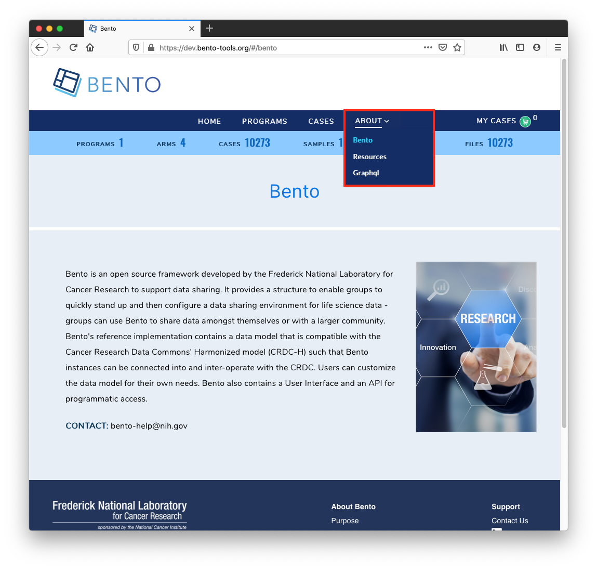

Static Pages¶
Introduction¶
There are a number of static pages that are available for the Bento framework. These are traditionally available by navigating to the “About” link on the Navigation Bar. In the example below, the static pages are “Bento”, “Resources”, and “GraphQL”.
Prerequisites¶
Fork the GitHub repo
https://github.com/CBIIT/bento-frontend(representing your GitHub username asYOUR-USERNAME)Create a local clone of your fork into a local directory, represented here as
$(src).
Instructions¶

Make and Test the local environment changes changes¶
Edit file:
$(src)/bento-frontend/.envChange the
REACT_APP_ABOUT_CONTENT_URLvariable to gibberish. One exampleREACT_APP_ABOUT_CONTENT_URL= https://raw.githubusercondsdsdstent.com/CBIIT/bento-frontend/master/src/content/prod/aboutPagesContent.yamlNow edit
$(src)/bento-frontend/src/content/prod/aboutPagesContent.yaml, and the system will show the changes
To Create A New Static Page with new Route¶
Edit
$(src)/bento/aboutPagesRoutes.jsadd a new pathAdd a new copy of yaml property to with page name matching above path
Edit configuration file¶
There is a maximum of 6 pages that can appear under “About”. If no informational pages are configured to be displayed, the “About” menu option will be hidden.
To add contents to the ‘About’ menu, see “Global Navigation Bar” instructions
To edit the title for each page in the ‘About’ menu:
edit file:
$(src)/aboutPagesContent.yamlset the variable
titleto have the title of the page.
To set the primary or “hero” image to be tiled onto each page:
edit file:
$(src)/aboutPagesContent.yamlset variable
primaryContentImagewith the desired imageNOTE: You cannot use the local file for this you should point to an external image url (e.g. publicly-available, on the internet)
To set a secondary image (including, a zoom and scan-around function):
Edit
$(src)/aboutPagesContent.yamlAdd the Field secondaryZoomImage to show up the secondary Image
To add content for each page: (including basic formatting of it, i.e. line/paragraph breaks, bold type, hyperlinked text), follow the following syntax guide
Note: The pages need to be in ‘YAML’ format
| Element | Syntax | Example |
| ————————————————– | ———————————————————- | ———————————————————— |
| Link or Download File from externally hosted file | $$[title](link)$$ | $$[Cloud Resources](https://datascience.cancer.gov/data-commons/cloud-resources)$$
(opens in new tab with link-out icon) |
| Bold Title | $$#text#$$ | $$#Cloud Resourses#$$ |
| Bold Inline Text | $$*text*$$ | $$@CloudResourses@$$ |
| Download Submission PDF | $${Text}$$ | $${submission guide [PDF]}$$ |
| Enhanced Link | $$[Title](target:[_self] url:[url] type:[Optional] )$$ | $$[Testing](target:_self url:/#/developers type:0)$$
(opens in same page without link-out icon) |
| Enhanced Link | $$[Title](target:[_blank] url:[url] type:[Optional] )$$ | $$[Testing](target:_blankurl:/#/developers type:0)$$
(opens in new tab without link-out icon) |
Best Practices¶
It is recommended to have the title of each page in the ‘About’ menu match the title on the actual page.
The suggested syntax for YAML files is to use 2 spaces for indentation, but YAML will follow whatever indentation system that the individual file uses. In our files we used 2 spaces to represent